A enguia colossal: a B5 maior e mais larga
04/11/2026 · a 2ª rodada da cabeça (a 1ª: folhas/2026-11-03/enguia-cabeca/cabecas.html) · nada instalado.
Você: "pode ser a B5, mas com a cabeça maior e mais larga", mantendo cerca de 3× a nave na tela.
Como saíram: no PixelLab, sempre partindo da própria B5, por dois caminhos:
- Editar: a B5 vai para o gerador, que aumenta e alarga o crânio e mantém o resto (a bocarra, a brasa, o pescoço oco, o olho azul, as guelras verdes). 8 tentativas.
- Conceito: uma geração nova com a B5 como referência de forma e de estilo, pedindo um crânio maciço. 13 candidatas.
Cada caminho rodou em dois quadros: o 96×64 da B5 (o mesmo tamanho na tela, a cabeça ocupando mais dele) e um 112×76, um pouco maior.
Conferido ampliado: as 21 saíram de perfil e viradas para a esquerda. Fora da escolha: três edições que voltaram iguais à B5, as que perderam a brasa da garganta, uma com a garganta branca demais e uma com rachaduras laranja pelo crânio todo (luz fora dos pontos de energia).
A E3 com o pescoço (o seu desenho)
Você escolheu a E3 ("me lembra a cabeça do Alien") com uma correção, desenhada por você: as duas linhas vermelhas. A de cima desce das costas da cúpula até a borda da tela; a de baixo continua a parte de baixo do pescoço até a mesma borda.
O que estava errado: a E3 terminava num corte reto, 10 px antes da borda da tela, e as costas da cúpula caíam num degrau logo antes dele.
Como foi feito: o PixelLab repintou só a faixa entre as suas duas linhas, à direita da cabeça (inpaint), num quadro mais largo, para o pescoço sair da imagem em vez de ganhar uma ponta. As cores novas foram puxadas para a paleta da própria E3. Conferido pixel por pixel: fora da faixa, 0 de 5.491 pixels mudou. A boca, o olho, a brasa e as guelras verdes são os da E3.
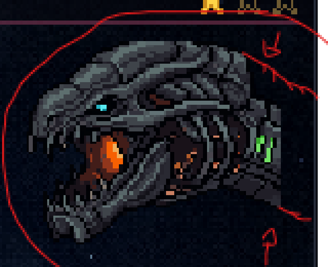
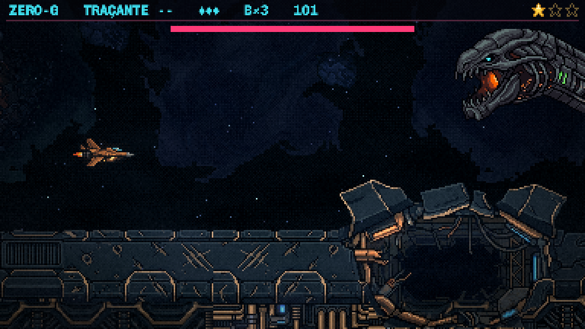
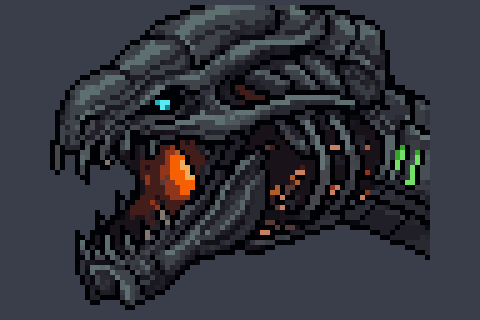
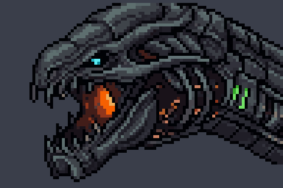
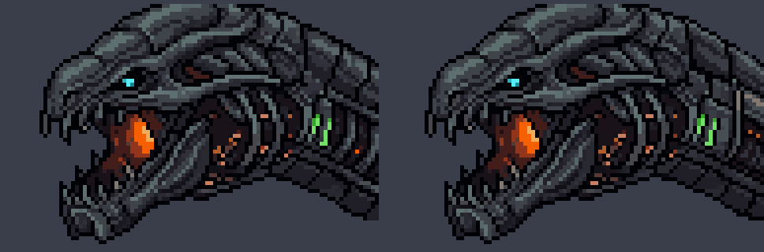
✅ APROVADA (04/11): você, "Boa, gostei. Pode seguir para o corpo". A cabeça é escolhidas/e3-pescoco-11.png; o corpo saiu dela em folhas/2026-11-04/enguia-corpo/corpo.html.
A 2ª rodada (registro)
O que estava na folha antes da sua escolha.
As grades
Em cada grade, a 1ª é a B5 de antes, na mesma escala, para comparar. Ampliadas ×4.
Editar · 112×76
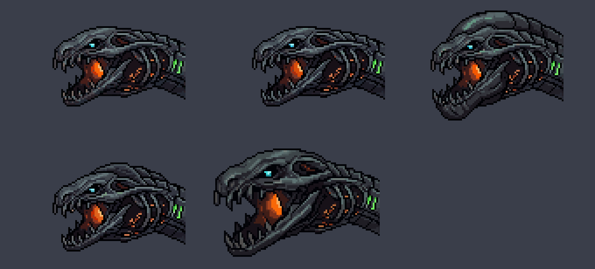
Editar · 96×64
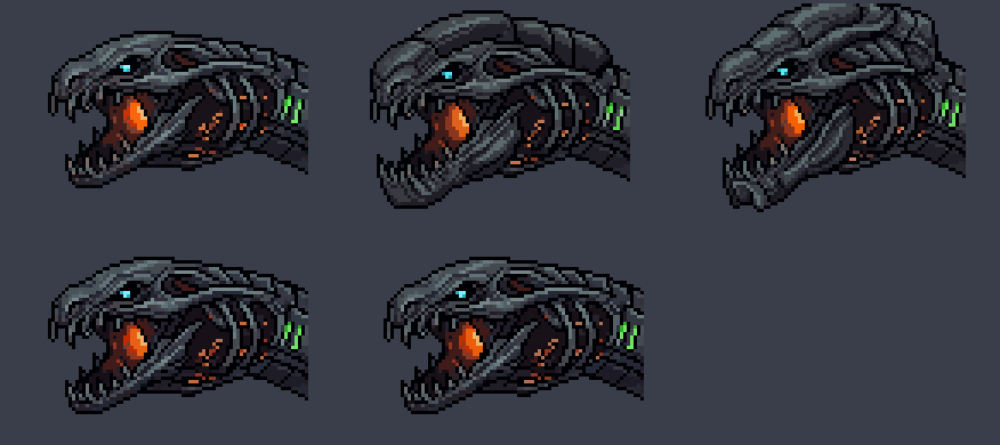
Conceito · 112×76
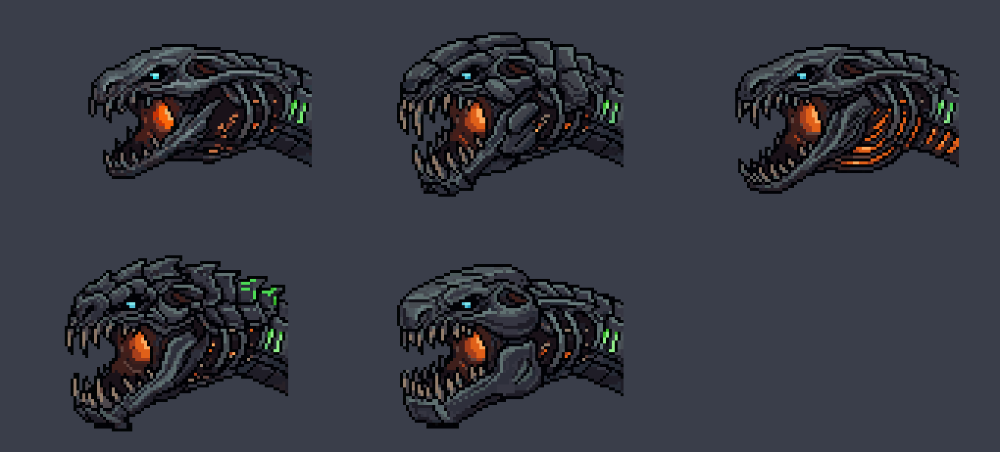
Conceito · 96×64
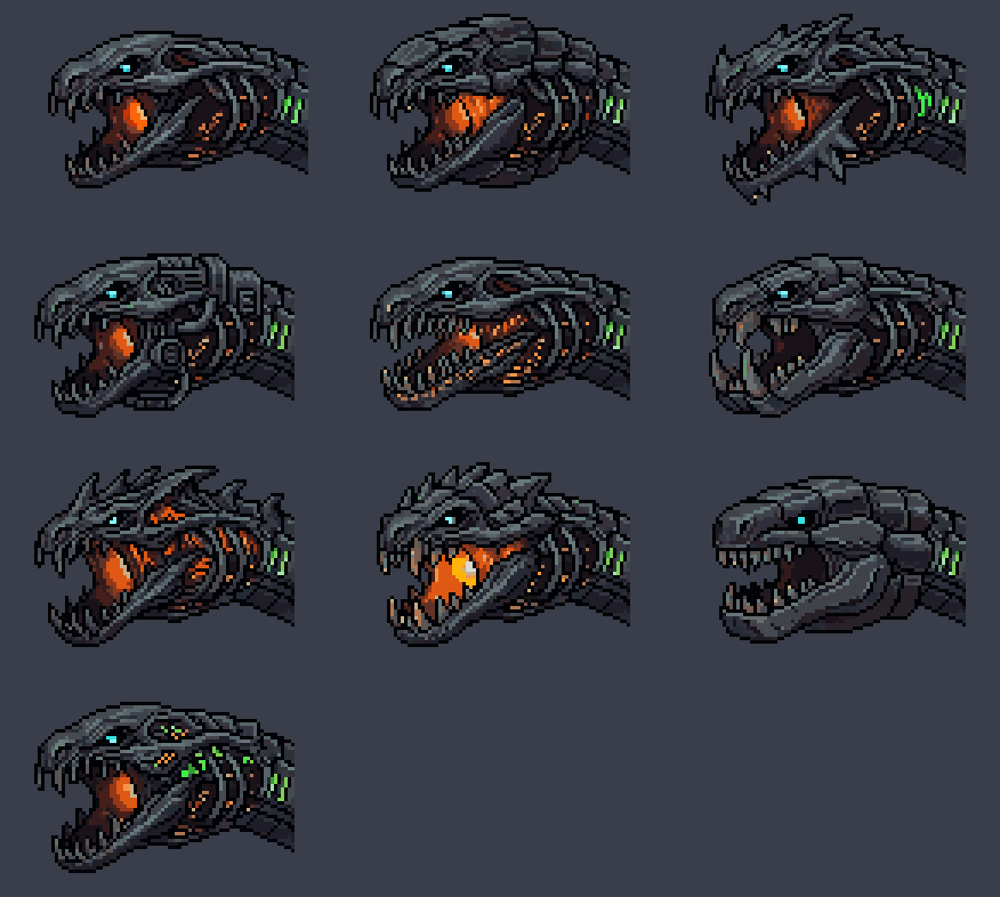
As seis escolhidas
À esquerda ×5; à direita no tamanho real, no posto dos canos, com a nave como medida (×3, sem a Atmosfera do jogo, que escurece um pouco).
| quadro | a cabeça (px) | desenho a mais que a B5 | |
|---|---|---|---|
| B5 (antes) | 96×64 | 76×46 | — |
| E1 | 112×76 | 95×62 | +52% |
| E2 | 112×76 | 76×63 | +31% |
| E3 | 96×64 | 76×61 | +27% |
| E4 | 96×64 | 76×58 | +25% |
| C1 | 112×76 | 77×56 | +19% |
| C2 | 112×76 | 77×56 | +19% |
A B5 de antes
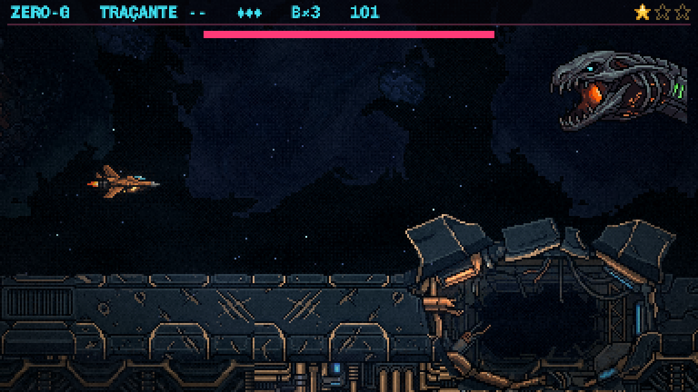
E1 — a B5 inteira, maior
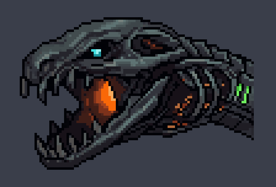
E2 — o crânio alto
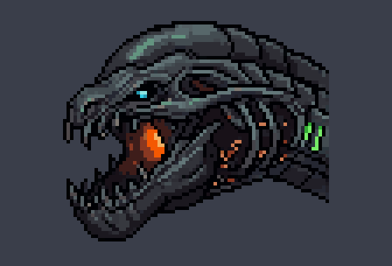
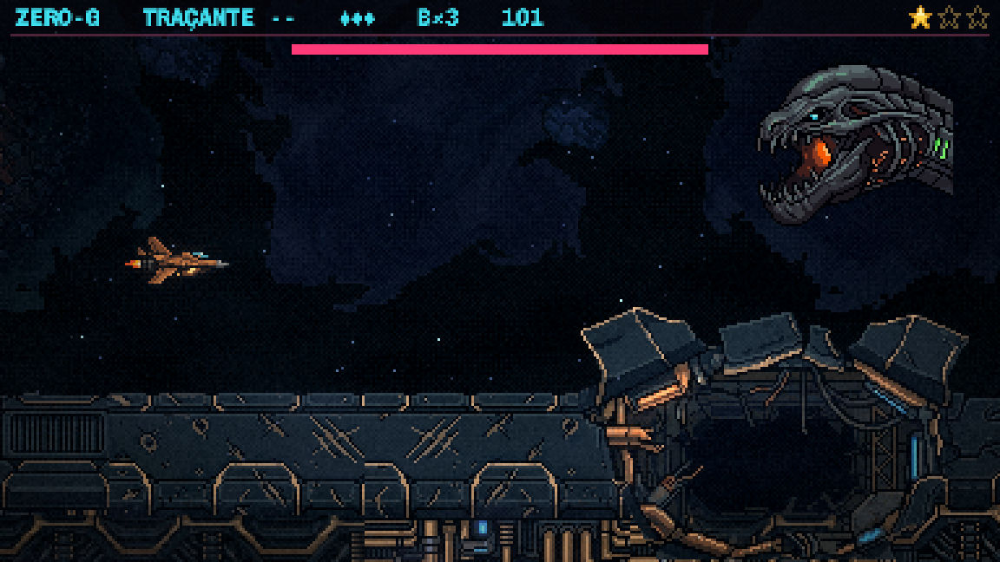
E3 — a mais pesada no quadro de hoje
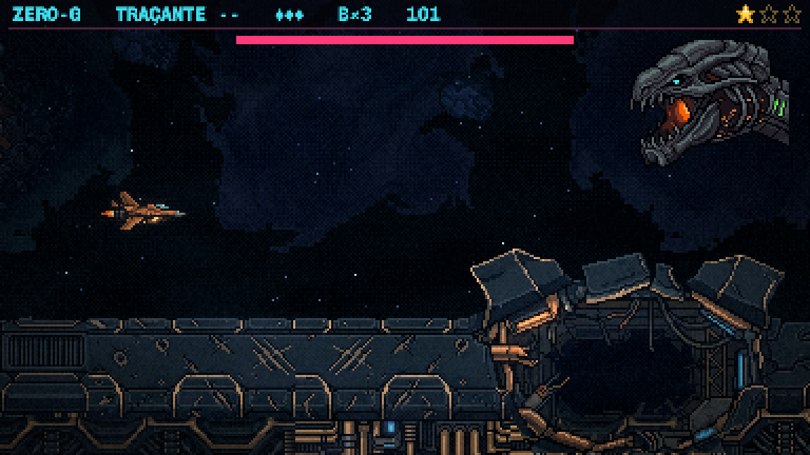
E4 — a cúpula, no quadro de hoje
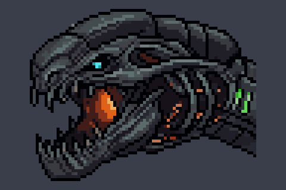
C1 — conceito, placas grossas
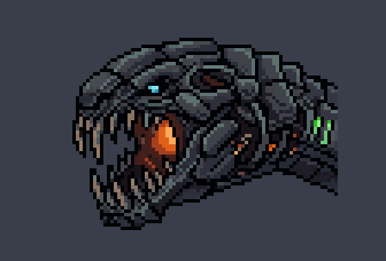
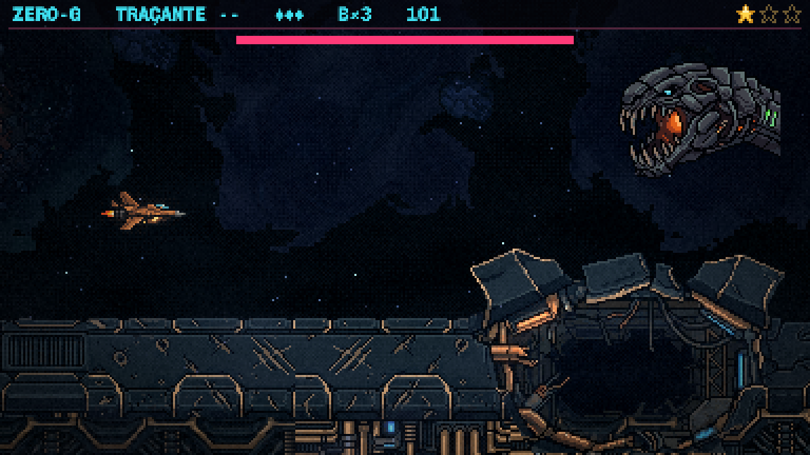
C2 — conceito, mandíbula grande
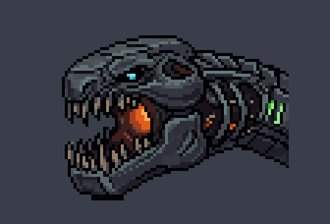
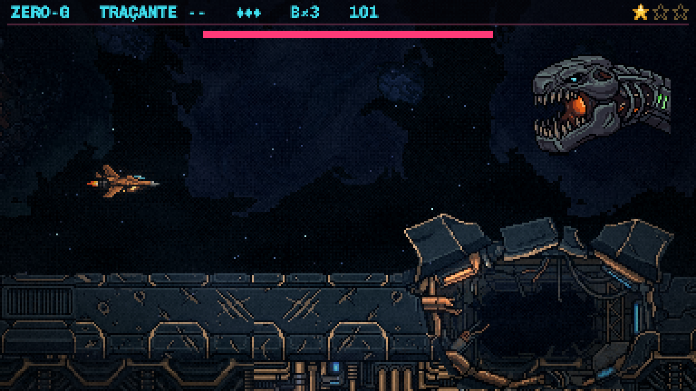
A minha recomendação
E1. É literalmente o que você pediu: a B5 que você escolheu, maior e mais larga, sem trocar nenhuma peça. Na tela ela fica um pouco maior que a B5 (95 px contra 76; a nave tem cerca de 40), ainda na faixa dos "3× a nave".
Se você quiser a cabeça maior sem aumentar o tamanho na tela, a E3 faz isso no quadro de hoje: cresce para cima e para baixo, não para os lados.
Para você decidir
- Qual segue? E1, E2, E3, E4, C1 ou C2 (ou uma das grades, pelo número).
- Ainda maior ou mais larga? Dá para fazer mais uma rodada partindo da escolhida.
Depois: a enguia INTEIRA a partir dessa cabeça (de perfil, corpo e cauda), de onde saem os anéis. Em seguida o plano e a maquete do movimento em blocos (spec §7).